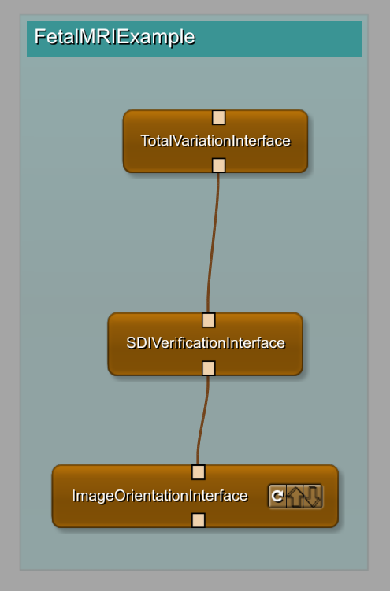

Tools for Fetal SuperResolution. From multiple Low Resolution acquisitions to High Isotropic Fetal Brain Reconstruction
The software presented on this page is for research purpose only.
Copyright © 2017-2018 Medical Image Analysis Laboratory, University Hospital Center and University of Lausanne (UNIL-CHUV), Switzerland
The tools in this package are based on : mial SuperResolution ToolKit Git.
Algorithms are based on:
[1] S. Tourbier, C. Velasco-Annis, V. Taimouri, P. Hagmann, R. Meuli, S. K. Warfield, M. B. Cuadra, A. Gholipour, Automated template-based brain localization and extraction for fetal brain MRI reconstruction, Neuroimage (2017)
[2] S. Tourbier, X. Bresson, P. Hagmann, R. Meuli, M. B. Cuadra, An efficient total variation algorithm for super-resolution in fetal brain MRI with adaptive regularization, Neuroimage 118 (2015) 584-597.
The brain masks are firstly estimate using the gestational age and the atlas from here:
A Gholipour, CK Rollins, C Velasco-Annis, A Ouaalam, A Akhondi-Asl, O Afacan, C Ortinau, S Clancy, C Limperopoulos, E Yang, JA Estroff, and SK Warfield. A normative spatiotemporal MRI atlas of the fetal brain for automatic segmentation and analysis of early brain growth, Scientific Reports 7, Article number: 476 (2017).
It depends on on the open-source image processing Insight ToolKit (ITK) version 4.13, and the Baby Brain Toolkit (BTK)
The code can be found here : mevislabFetalMRI GiT
The SuperResolution process can be run with © MeVisLab only or through Frontier © Frontier
| The three most important modules (MevisLab Only) | The three most important modules (Using Frontier) |
|---|---|
|  |  |